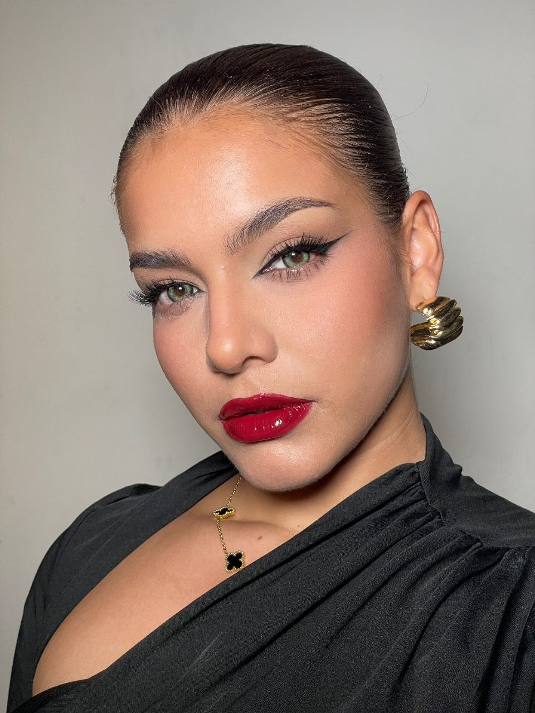
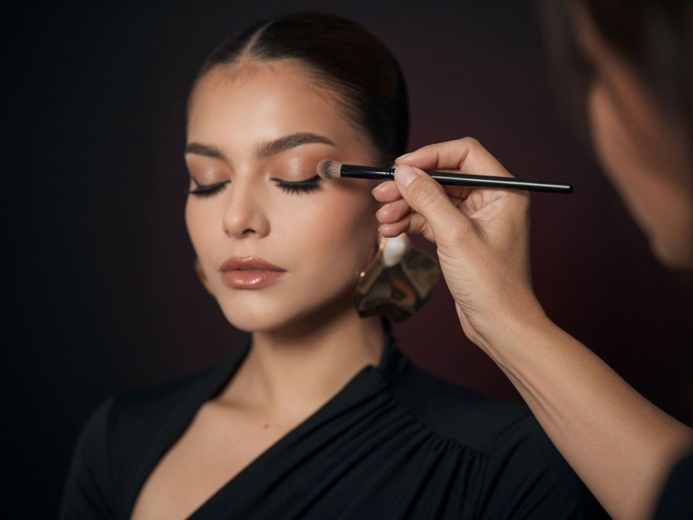
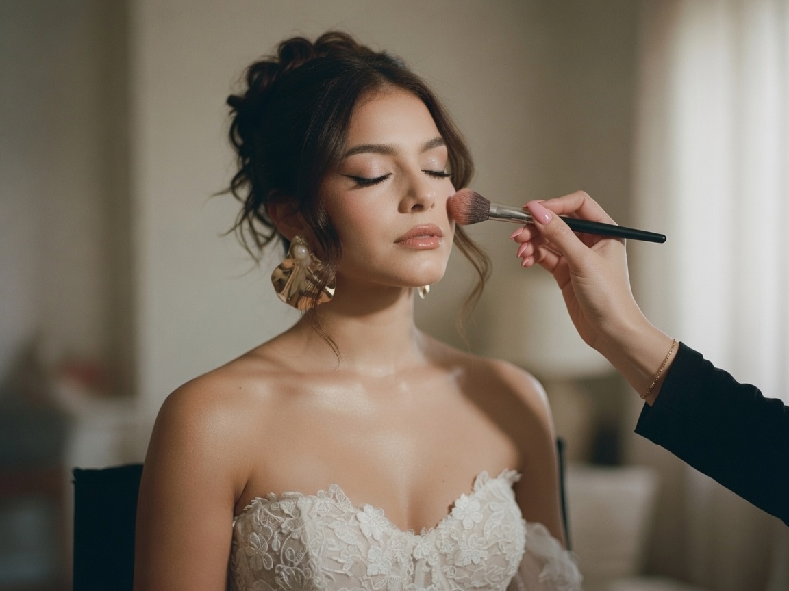
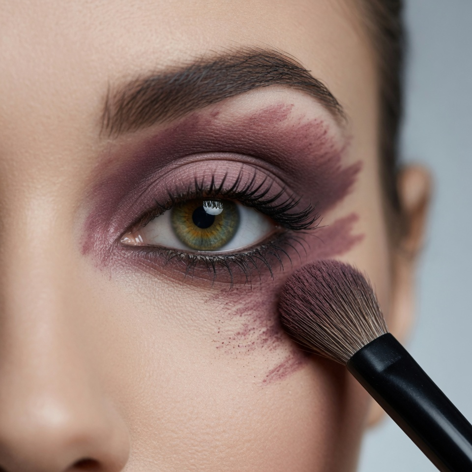

![[ALT_PENDIENTE]](assets/section-class-galeria/galeria-04.webp)
![[ALT_PENDIENTE]](assets/section-class-galeria/galeria-05.webp)
![[ALT_PENDIENTE]](assets/section-class-galeria/galeria-06.webp)
"Andrea me hizo sentir hermosa en mi boda sin perder mi esencia. Cada detalle, perfecto."
Camila R. · Boda
![[ALT_PENDIENTE — resultado del maquillaje de novia de Camila]](assets/section-class-resenas/resena-01.webp)

Andrea Piñango lleva cuatro años especializándose en técnicas de perfeccionamiento.
Cercanía. Técnica. Presencia. Cada look se elige contigo, para tu ocasión — no para una pasarela.
Tu rostro me dice qué necesita. Yo solo lo revelo.
![[ALT_PENDIENTE]](assets/section-class-galeria/galeria-01.webp)
![[ALT_PENDIENTE]](assets/section-class-galeria/galeria-02.webp)
![[ALT_PENDIENTE]](assets/section-class-galeria/galeria-03.webp)
Desde tu primer look hasta técnica profesional.

¿Nunca te has maquillado y te gustaría aprender? Esto es para ti.
Ver clase →¿Ya maquillas y quieres perfeccionar tu técnica? Esto es para ti.
Ver clase →"Andrea me hizo sentir hermosa en mi boda sin perder mi esencia. Cada detalle, perfecto."
Camila R. · Boda
"Tomé la clase de automaquillaje y ahora me maquillo en la mitad de tiempo. Súper paciente explicando."
Valeria M. · Clase de automaquillaje
![[ALT_PENDIENTE — resultado del automaquillaje de Valeria]](assets/section-class-resenas/resena-02.webp)
"Contraté el paquete con prueba para mi evento y llegó puntual con todo listo. Recomendadísima."
Fernanda G. · Evento social
![[ALT_PENDIENTE — resultado del maquillaje de evento de Fernanda]](assets/section-class-resenas/resena-03.webp)

Explora la variedad de opciones a escoger.
Ver paquetes →
¿No sabes dónde empezar? Haz clic aquí.
Ver clases →Reserva por WhatsApp. Sin pago online, sin complicaciones.
RESERVARLima, Perú · Madrid, España · WhatsApp 920 595 147
Lima, Perú y Madrid, España. La movilidad no está incluida en el precio del servicio.
Depende del servicio elegido: cada paquete de novia tiene su propio tiempo, y las clases duran 3 horas.
Me escribes por WhatsApp y te confirmo disponibilidad. Reservas tu fecha con un adelanto de 50 soles vía Yape; al enviarme la captura del pago, recibes por correo los datos verificados de tu cita.
Sí. El adelanto no se reembolsa, pero puedes mover tu fecha sin problema.
Sí, llevo todos los productos y herramientas necesarias.
Sí, para novias — se reserva con una semana de anticipación.